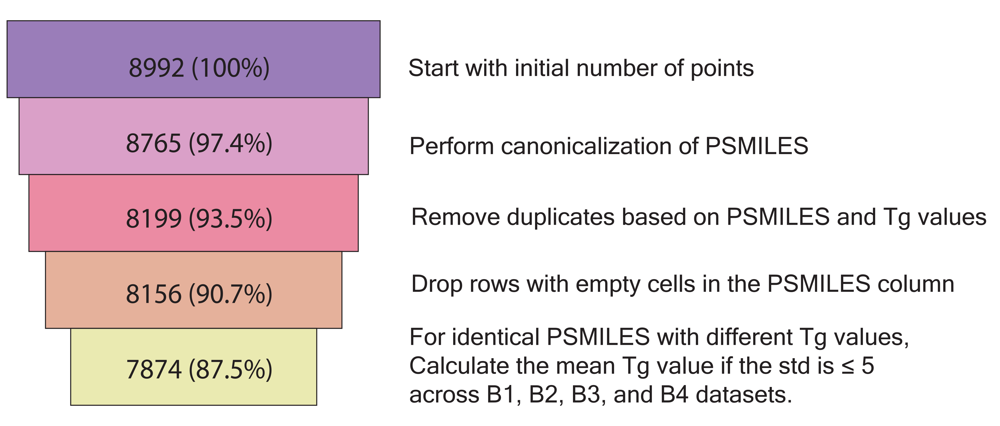
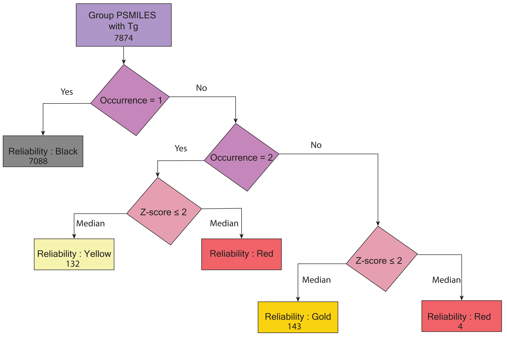

Datasets¶
CuratedGlassTempDataset¶
from polymetrix.datasets import CuratedGlassTempDataset
dataset = CuratedGlassTempDataset()
print("Available features:", dataset.available_features)
print("Available labels:", dataset.available_labels)
print("Available metadata:", dataset.meta_info)
This will output the list of available features, labels, and metadata for the dataset.
Since, the dataset has been curated for the glass transition temperature (Tg) data for the polymers, the available labels are labels.Exp_Tg(K) and the available features are the list of features that are available in the dataset. In addition, this dataset also contains metadata information about the polymer, PSMILES, source, Tg range, number of points, Tg values, reliability, and standard deviation of the data.
The meta.source contain the following names of the sources from which the data has been obtained for Tg dataset along with links to the sources:
Schrodinger- SchrodingerMattioni- MattioniUchicago- UchicagoLiu- LiuNguyen- NguyenWu- WuQiu- QiuGREA- GREAXie- Xie
For the same polymer, different glass transition temperature values are reported from various sources. For this reason, we have considered the median value of the Tg values for the same polymer from these sources as the Tg value listed in the labels.Exp_Tg(K) column. Additionally, we have provided the reliability of the data in the meta.reliability column. The reliability of the data is assigned on the occurrence of polymer and Z-score ≤ 2. The reliability of the data is categorized into three categories:
Black- This category indicates that the reliability of the data is uncertain because the polymers are unique, and there is limited information available. This is based on our estimate.Yellow- This category suggests that the data is moderately reliable based on our estimate, as the polymer has two different Tg values from different sources with a Z-score ≤ 2.Gold- This category means the data is highly reliable because the polymer has more than two different Tg values from different sources and Z-score ≤ 2.Red- This category indicates that the data is unreliable because the polymer has different Tg values from different sources with a Z-score > 2.
The meta.tg_range column contains the range of the glass transition temperature for the polymer for multiple sources.
The meta.tg_values column contains the Tg values for the polymer from different sources in a list.
The meta.num_of_points column contains the number of data points for the polymer that has different Tg values from different sources.
The meta.stdev column represents the standard deviation of the Tg values for the polymer.
The meta.polymer_class column contains the polymer class of the polymer. The polymer class has 22 different classes, which are listed below.
Polyimides- 1765Polyoxides- 1748Polyesters- 660Polyacrylics- 617Polyamides- 486Polyimines- 265Polyvinyls- 254Polystyrenes- 241Polysiloxanes- 238Polysulfides- 216Polycarbonates- 160Polyurethanes- 123Polyphosphazenes- 107Polyphenylenes- 104Polyolefins- 55Polydienes- 41Polyhalo-olefins- 40Polyureas- 39Polyanhydrides- 28Polyketones- 7Polyethers- 1Other class- 172
The figures below illustrate the data filtering funnel and the data curation workflow for the glass transition temperature (Tg) dataset. In the data filtering funnel, B1, B2, B3, and B4 represent the sources (Schrodinger, liu, Mattioni, and Wu), all of which originated from the Bicerano handbook. We first corrected these sources and then merged the data from all sources to create the curated dataset for the glass transition temperature (Tg) data of polymers.
 Caption 1: Correction to Bicerano sources
 Caption 2: Data Curation Workflow